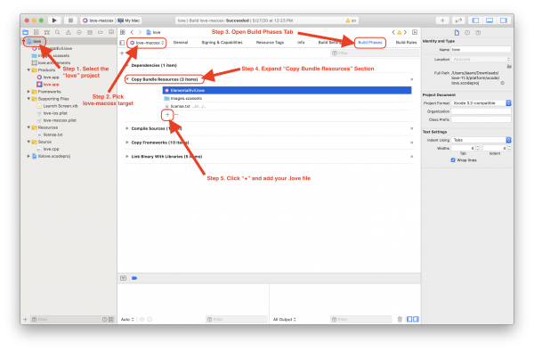

Game Distribution
Once you have completed your game you surely want to make it available to others. In general you should first create a .love-file which can be either directly distributed (which requires users to have LÖVE installed) or used for platform specific packages.
These are the preferred ways to distribute your game depending on target (all make use of the .love file):
- Windows → Windows Executable
- macOS → macOS Application
- Linux → plain .love file, or Appimages
Contents
Create a .love-file
Please note that some operating systems use case-sensitive paths. To avoid unnecessary hassle make sure that the path specifications you use in code matches that of your folders and files.
To create a .love-file you have to create a zip file of the whole game directory. Make sure that your main.lua is in the root of the archive, e.g. if you have
<somedir>\SuperGame\gfx\character.png <somedir>\SuperGame\main.lua <somedir>\SuperGame\conf.lua
then you must ensure the zip file contains
gfx\character.png main.lua conf.lua
and not the directory SuperGame\.
Once you have your zip file you simply rename the ending from .zip to .love and you are done!
Note: If you're using a case-insensitive file system (e.g. Windows and macOS), try running your game using the generated .love file. This will reveal any case sensitivity problems that other users may run into when trying to run your game. A common pitfall is to have filename with different capitalization than it's in the game code because once the game is zipped, it becomes case-sensitive.
Platform Specific Notes
Windows
Windows supports creation of zip files out of the box via right-click menu. For detailed instructions see Compress and uncompress files (zip files).
macOS
Inside the game folder, select the game files and folders, right-click/Ctrl+click and pick Compress n items. Then rename the resulting .zip file to have a .love ending.
Alternatively, you can use the terminal. Navigate inside the game folder and run:
zip -9 -r SuperGame.love .
Linux
Assuming your current directory is SuperGame/ you can create the .love file from command line directly using
zip -9 -r SuperGame.love .
Creating a Windows Executable
Once you have packed your game into a .love file you can create a game executable that directly runs your game.
For this you have to append your .love file to the love.exe file that comes with the official LÖVE .zip file. The resulting file is your game executable.
Once you have your game executable you can pack it together with all the other DLL files of the official LÖVE .zip file into a new .zip file and share this with the world.
Platform Specific Instructions
Windows
To create your game executable under windows use the command line to run
copy /b love.exe+SuperGame.love SuperGame.exe
Note: You may have to run the command as an administrator on your computer. You can do this by going to Windows\System32 and right clicking on cmd.exe and selecting the option Run as administrator. After this, you must type cd C:\Program Files\LOVE\ (or whatever your default love directory is), then you may continue as normal.
Alternatively you can create a .bat (e.g. create_game_exe.bat) file with the contents
copy /b love.exe+%1 "%~n1.exe"
and then you can simply drag your SuperGame.love file onto the .bat file and it will create the file SuperGame.love.exe which you could then use for distribution.
If you are using PowerShell instead of cmd, then use the following command:
Get-Content love.exe,SuperGame.love -Encoding Byte | Set-Content SuperGame.exe -Encoding Byte
or invoke cmd from PowerShell using the following:
cmd /c copy /b love.exe+SuperGame.love SuperGame.exe
This method creates a fused game.
When distributing the Windows executable you will need to include the dll files that came in the folder of the love.exe you used (so don't mix the 32 bit dll's with the 64 bit dll's). Without these files you will get error message when attempting to run SuperGame.exe on a windows machine.
The contents of your final distribution folder should look something like this:
- SDL2.dll
- OpenAL32.dll (note: this file is different in the 64 bit download despite still being called 'OpenAL32.dll')
- SuperGame.exe
- license.txt (note: the license requires that it be included in any further distribution)
- love.dll
- lua51.dll
- mpg123.dll
- msvcp120.dll
- msvcr120.dll
Windows icon
You can use your own icon images using tools like for example the freeware Resource Hacker.
Video tutorial and step-by-step instructions are available.
Linux / macOS
You can create the windows executable from Linux and macOS using the command line.
First download the official zipped 32 or 64 bit executable (not the installer) from https://www.love2d.org/. 32 bit games can run on 64bit Windows systems but not vice versa, so to save time on smaller games, you can provide 32bit only.
Then in the command line/terminal run
cat love.exe SuperGame.love > SuperGame.exe
to obtain the game executable SuperGame.exe.
Creating a macOS Application
For official/commercial distribution (e.g., in the Mac App Store) skip to the next section, Official Distribution and the App Store.
Once you have your game prepared as .love file you can make your game available for macOS users by following the steps below (video tutorial available):
- Download and extract the Mac version of LÖVE from the LÖVE homepage
- Rename love.app to SuperGame.app
- Copy your SuperGame.love to SuperGame.app/Contents/Resources/ (right-click/Ctrl+click and pick "Show Package Content" on macOS). This will result in the game running in fused mode.
- Modify SuperGame.app/Contents/Info.plist (see below for details)
- Zip the SuperGame.app folder (e.g. to SuperGame_osx.zip) and distribute it. Enable the -y flag of zip to keep the symlinks.
When modifying SuperGame.app/Contents/Info.plist make sure to change the string values of the following XML-tags:
- CFBundleIdentifier
- CFBundleName
and remove the section UTExportedTypeDeclarations which ensures that macOS does not associate all .love files with your app. Overall the changes should be something like this:
| Original Info.plist | Modified Info.plist |
|---|---|
... <key>CFBundleIdentifier</key> <string>org.love2d.love</string> ... <key>CFBundleName</key> <string>LÖVE</string> ... <key>NSPrincipalClass</key> <string>NSApplication</string> <key>UTExportedTypeDeclarations</key> <array> ... </array> </dict> </plist> |
... <key>CFBundleIdentifier</key> <string>com.SuperCompany.SuperGame</string> ... <key>CFBundleName</key> <string>SuperGame</string> ... <key>NSPrincipalClass</key> <string>NSApplication</string> </dict> </plist> |
Official Distribution and the App Store
Compiling Mac apps requires a Mac running macOS with XCode installed (you can install XCode from the app store).
- Download the love source code
- Download the required frameworks from here and place them in
/Library/Frameworks/. - Open the Xcode project found at
platform/xcode/love.xcodeproj. You will build thelove-macosxtarget as described below. - In XCode, Modify the macOS icons in
Images.xcassets - In XCode, Update the
love-macosx.plist(see instructions above) - Add your .love file to the "Copy Bundle Resources" Build Phase
 - Follow Apple's guide for distributing Mac apps
Distribution for Linux
For Linux there is not yet a simple way to distribute your game. The general approach here is to point to the official LÖVE packages at https://www.love2d.org. Once the package is installed, the .love packages are usually automatically executed using the installed LÖVE package or using the command line:
love SuperGame.love
Make sure to include a conf.lua file with at least the LÖVE version used.
function love.conf(t)
t.version = "11.4"
end
A common mistake is trying to fuse the love Linux binary with a love file:
cat /usr/bin/love SuperGame.love > SuperGame
chmod a+x ./SuperGame
Please keep in mind, while the binary `SuperGame` will run on your machine, and other Linux distros that have the same architecture and similar version libraries, there's a good chance that it will not run on many other Linux distros except when you're fusing with the official AppImage (see below).
Official AppImage
As of 11.4, the AppImage is relocatable. Meaning, if the AppImage contents are extracted then moved somewhere, then the executable inside it (<root>/bin/love) will just run without any problems. This means using Windows-style fusing using the binaries from the AppImage is now supported.
- Download the AppImage from the Download Page
- Create a new directory, then run the .AppImage with --appimage-extract command-line parameter in that directory.
- A new squashfs-root directory will be created. Fuse your game with
cat squashfs-root/bin/love SuperGame.love > squashfs-root/bin/SuperGame - Set the execute flag using
chmod +x squashfs-root/bin/SuperGame - Test out that the game is fused correctly by running it:
squashfs-root/bin/SuperGame. If it works, delete the originallovebinary.
Then you can either just tar archive anything inside squashfs-root or repackage it into AppImage. If you choose the former,
- Set the working directory first (
cd squashfs-root) - create a new launcher script that runs
bin/SuperGamerelative to the current script location, then archive all of the directory contents withtar czvf ../SuperGame.tar.gz *
If you choose to repackage the game to AppImage,
- Get appimagetool from here.
- Modify the love.desktop file to match your game description. Make sure to modify the
Exec=love %ftoExec=SuperGame %f. - If you need to change the icon, place your PNG (SuperGame.png for example) or SVG (SuperGame.svg) icon beside love.desktop and modify the
Icon=lovetoIcon=SuperGame. You can remove love.svg. - Repackage it to AppImage by running
appimagetool squashfs-root SuperGame.AppImage.
Note: If you get an error when running the repackaged AppImage similar to boot.lua: cannot load game at path ./tmp/.mount_SOMERANDOMCHARS/SuperGame then you will also need to modify the AppRun file inside your squashfs-root folder so that the exec command points to your new fused binary - an example AppRun file would look like this:
#!/bin/sh
if [ -z "$APPDIR" ]; then
APPDIR="$(dirname "$(readlink -f "$0")")"
fi
export LD_LIBRARY_PATH="$APPDIR/lib/:$LD_LIBRARY_PATH"
if [ -z "$XDG_DATA_DIRS" ]; then #unset or empty
XDG_DATA_DIRS="/usr/local/share/:/usr/share/"
fi
export XDG_DATA_DIRS="$APPDIR/share/:$XDG_DATA_DIRS"
if [ -z "$LUA_PATH" ]; then
LUA_PATH=";" # so ends with ;;
fi
# if user's LUA_PATH does not end with ;; then user doesn't want the default path ?
export LUA_PATH="$APPDIR/share/luajit-2.1.0-beta3/?.lua;$APPDIR/share/lua/5.1/?.lua;$LUA_PATH"
if [ -z "$LUA_CPATH" ]; then
LUA_CPATH=";"
fi
export LUA_CPATH="$APPDIR/lib/lua/5.1/?.so;$LUA_CPATH"
# run the SuperGame bin
exec "$APPDIR/bin/SuperGame" "$@"
Linux
It has not been yet proven to work in all scenarios, but this a way of distributing your game for Linux.
- Download the appropriate Linux version of love (with file extension .tar.gz), either x86_64, or i686. Download Page
- Extract the .tar.gz. You can do this by either right clicking the file and pressing “extract” on most visual file managers, or extracting it via the command line:
tar -xvzf love.tar.gz
- Move your game.love file inside the extracted folder.
- Edit the file called love by replacing "$@" with "${LOVE_LAUNCHER_LOCATION}/game.love”
Debian
There is a policy for including LÖVE games in the Debian archive. It can be followed to create a package for a game even if it is not intended to include it in the archive.
AppImages
The AppImage format is a format for packaging applications in a way that allows them to run on a variety of different target systems (base operating systems, distributions) without further modification. The whole kit can be downloaded from here.
In order to package games using AppImage, the libraries and dependencies required by love need to be gathered, which can be done easily using CARE (available packaged in the Ubuntu repositories) by executing:
care -o love.tar.gz love
.
This program makes an archive, which contains the love executable and its dependencies and related files kept in the way of your system. Secondly, the game's .love file needs to be 'fused' by the means shown in the above section. Now, the files need to be placed in the following way in a new directory:
Application Directory/
├── <game name>.desktop --> This file contains path to the program's icon file,
│ the name of the program and the command to execute it.
├── <game name>.png --> Your game's icon
└── usr/
├── bin/ --> Your fused binary needs to be placed here
├── lib/ --> Your libraries need to be placed here
└── share/ --> Your (or LÖVE's) data files (and other things) need to be placed here, if any
Finally, the directory needs to be converted into an AppImage, using AppImageAssistant available in the kit. More information can be found in the AppImage documentation.
Android
Compiling from source
First, grab the source code either by downloading it from the Download Page or by cloning the LÖVE Android project:
git clone --recurse-submodules https://github.com/love2d/love-android
(optionally with --depth 1 to save download times)
Then, download the Android SDK (exactly API 31 for 11.4) and Android NDK (exactly version 21.3.6528147 or r21d for 11.4).
Set the ANDROID_SDK_ROOT to your Android SDK location then do either one of these to fuse your game:
1. Put your game files in (project)/app/src/embed/assets such that your main.lua path is (project)/app/src/embed/assets/main.lua (11.4 and later, recommended); or
2. Put your zipped *.love to (project)/app/src/embed/assets/game.love, noting the game.love filename (legacy, deprecated in next major update)
You may need to create the necessary directories.
Change the app launcher name (android:label) in (project)/app/src/main/AndroidManifest.xml. Change the package name (applicationId), version code (versionCode), and version string (versionName) in (project)/app/build.gradle.
For Linux or macOS systems it may be necessary set the executable permission:
chmod +x gradlew
And finally to generate the APK, do:
./gradlew assembleEmbedNoRecordRelease
The APK will be in (project)/app/build/outputs/apk/embedNoRecord/release/app-embed-noRecord-release-unsigned.apk
And if you need to generate AAB to be uploaded to Play Consode, do:
./gradlew bundleEmbedNoRecordRelease
The AAB will be in (project)/app/build/outputs/bundle/embedNoRecordRelease/app-embed-noRecord-release.aab
For more information see the GitHub repository.
Using APKTool

|
This method is okay for quick testing through APK sideloading. However this method is not supported for Play Store distribution. |
The steps can be found here: Game Distribution/APKTool.
iOS
Basic instructions for iOS (without fusing) are available at Getting_Started#iOS.
|
|
Due to Apple restrictions, fusing for iOS is only possible under macOS! |
To fuse your game into the LÖVE engine:
- Get iOS source code from love2d.org.
- Open platform/xcode/love.xcodeproj with Xcode.
- Select love-ios target (not love-macosx)
- Select Build Phases of the 'love-ios' target and add your 'game.love' file into Copy Bundle Resources.
- Build the project.
- Your game should appear on your iOS device as an app.
If you can't find the relevant XCode UI elements, you can refer to video tutorial on YouTube.
Distribution on the web
Publishing as a HTML5 or JavaScript game is possible thanks to Davidobot/love.js. Threads for example are not supported though and playback of course depends on the browser. Note that it may lag behind latest LÖVE version, check the repository for details.
The online tool LÖVE Web Builder helps with using the former version of love.js. (May not be up to date.)
- The available Love.js build is based on version 0.11.1 (a pre-release of the final 11.0) and not the latest version.
Community Tools
There are a few tools developed by the community to help with game distribution.
- LÖVE Actions - Build & deploy game packages on MOST popular platforms with GitHub Actions. Supports Android, iOS, Linux, macOS, Windows. Doesn't support HTML5/WASM
- makelove, advanced multi-platform tool to fuse your game written in Python 3. Supports Windows and Linux with AppImage.
- love-release (forum), a Lua script that automates game distribution. Supports Windows, macOS, Debian, Linux, with much more features.
- boon (forum), a multi-platform, easy to use tool supporting Windows, macOS, Linux.
- Love Distribution Pack[sic], a windows-only tool that can create .love files and .exe.
- love-dist, a windows-only tool that can LuaC your files and create an .exe.
- love-export, a fast and simple command-line tool that builds binaries for you. Supports Windows, MacOS, and Linux.
You may also find other libraries under the distribution section on the Awesome Löve list.
Other Languages
Dansk –
Deutsch –
English –
Español –
Français –
Indonesia –
Italiano –
Lietuviškai –
Magyar –
Nederlands –
Polski –
Português –
Română –
Slovenský –
Suomi –
Svenska –
Türkçe –
Česky –
Ελληνικά –
Български –
Русский –
Српски –
Українська –
עברית –
ไทย –
日本語 –
正體中文 –
简体中文 –
Tiếng Việt –
한국어
More info